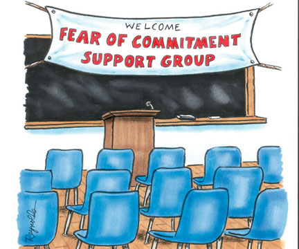

puts 'hello world'
'Theresa' =>'Machiko' =>
What are we doing here?
- Machiko: How to teach yourself by working on a project
- Theresa: Learn in groups of friends
- Emilia: Make an app for your coworkers
- Shana: Make an app for teaching yourself
The first step:
git init
Start with the end in mind
- Where do you want to end up?
- And start backwards until you get to your current point
- Sketch it out
- List milestones
- End with your ultimate learning goals
Just say No to commit-phobia

git commit
Stand up (once in a while)
Reflect and share
git log
while learning |do|
commit: git commit
stand up: git log
end
Learning with peers
Plan a learning party with other beginners & friends
Party planning
- Choose a topic.
- Break it down into small parts
- Assign each participant a part to study and present
Party time
- Each person whiteboards his or her topic
- It's okay if you don't quite get it!
- Talk it out. Draw it out
- Make mistakes together & learn together
Emilia's after-school program forms app
Ooply: Shana's flash card app